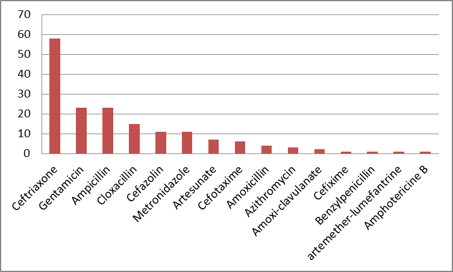
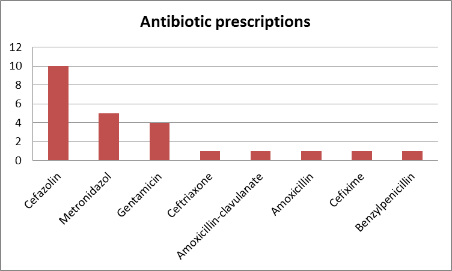
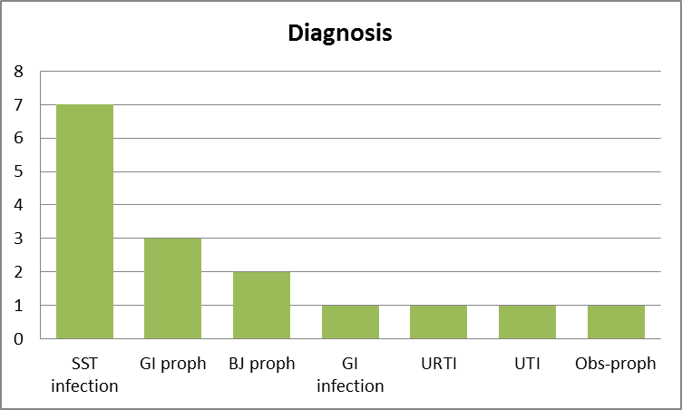
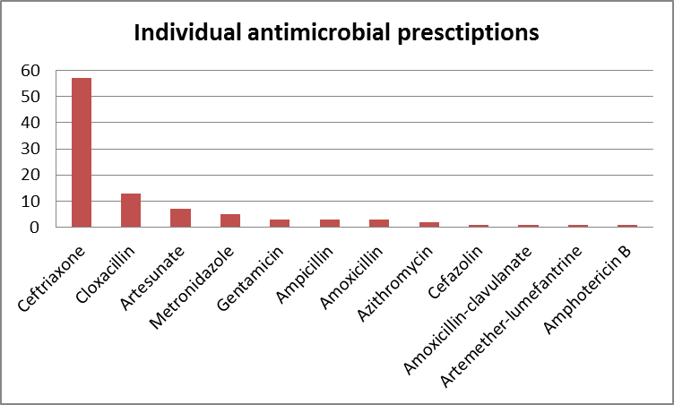
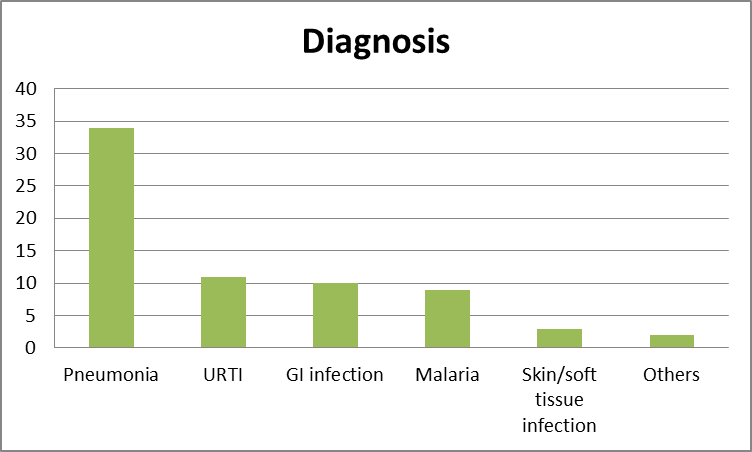
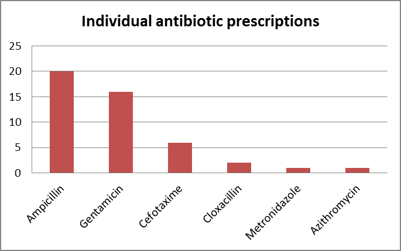
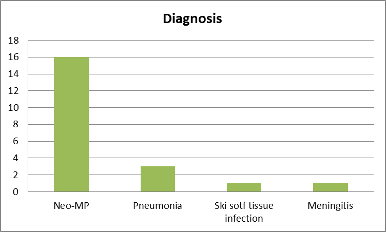

Annexes MSF PPS
POINT PREVALENCE SURVEY ON ANTIBIOTIC USE
ABS HOSPITAL (YEMEN). JANUARY 2019
Daniel Molina Morant. Medical Activity Manager MSF OCBA
INTRODUCTION
Abs hospital is a primary health centre located in Hajjah Governorate, Northern Yemen, supported and run by MSF (Doctors without borders). A point prevalence survey on antibiotic use was performed in all departments of the hospital on 20th and 21st January 2019. The aim of this survey was to describe a ‘snapshot’ of antibiotic prescribing on a single day including only admitted patients on antibiotic treatment at 8 am on the day of the survey.
The structure of Abs Hospital consists of a surgical ward (adult and paediatric), a paediatric medical ward, isolation room (adult and paediatric), intensive therapeutic feeding centre (ITFC), maternity (medical and surgical activity) and neonatology. In the table below this structure is explained, and data about total capacity, admissions on the day of the study and total number of patients on antimicrobial treatment at that moment (target of the study) are described:
Table 1. Hospital structure, admissions and patients on antibiotic during the survey
| Department | Total beds | Total admissions (%) | Patients on antibiotics (%) |
|---|---|---|---|
| Adult medical ward (isolation room) | 8 | 5 (62.4%) | 1(20%) |
| Adult surgical ward | 18 | 18 (100%) | 13 (72.2%) |
| Maternity | 38 | 29 (76.3%) | 2 (6.9%) |
| Paediatric medical general ward | 28 | 28 (100%) | 28 (100%) |
| Paediatric medical ward (isolation room) | 32 | 16 (50%) | 16 (100%) |
| Paediatric medical ward (ITFC) | 45 | 24 (53.3%) | 22 (91.6%) |
| Paediatric surgical ward | 10 | 10 (100%) | 2 (20%) |
| Neonatology | 26 | 22 (84.6%) | 21 (95.5%) |
| Total | 197 | 152 (77.2%) | 105 (69.1%) |
METHODOLOGY
Two prescription tools were piloted simultaneously, using the same data collection sheet: the “Global Point Prevalence Survey of Antimicrobial Consumption and Resistance” (Global-PPS) (annex 1) and the MSF OCG Rational prescription tool (annex 2-4).
Data collection was carried out by two MSF doctors (one general practitioner national staff and one expat infectious diseases doctor) according to Global-PPS 2019. Due to the big capacity of the hospital, adult departments and neonatology data were collected on 20th January, and all paediatric departments’ data on 21st January. Data collected include information about the ward (annex 1) and patient data with variables on demography, diagnosis, antibiotic treatment prescribed (posology, administration route and duration), type of indication and guideline compliance (annex 2-4). MSF protocols were considered the guideline reference in all cases to assess compliance. To achieve an optimal consistency of the results, for internal analysis we decided to group the wards into adults, paediatrics and neonates.
The GPPS tool provides automated feedback that also compares each parameter result with the average in the country, the continent and Europe. In our case it was not possible to compare within Yemen since our hospital has been the first in the country to be included in this international platform.
The MSF OCG tool evaluates the antibiotic rational prescription rate. This rate is the result of a composite of 6 questions to be answered by the investigator after individual evaluation of the data, regarding the diagnosis, posology, duration, route of administration, compliance to protocol and consideration of contraindications. Only when all 6 topics are correct, the prescription is considered as rational.
RESULTS
Overall overview
The total bed capacity of the hospital was 197. At the moment of the survey, there were 152 patients admitted, with a bed occupancy rate of 77%. Among these patients, a total of 105 were on antimicrobial treatment, with an overall prescription rate of 69%. Ages of patients ranged from 1 day to 70 years. There were a total of 167 antimicrobial individual prescriptions (158 antibiotics and 9 antiparasitics). Considering only antibiotics, 60 patients were on one antimicrobial, 34 patients on two, 10 patients on three, and 1 patient was receiving four antibiotics at once. All antibiotic treatments were empirical since there was no possibility to perform cultures in the laboratory of the hospital. All antiparasitic treatments were considered as targeted as tests for these diseases are available. No nosocomial infections were reported in the hospital. For this last point it is important to note the difficulty to get information about recent previous admissions of the patient which could typify the current infection as nosocomial.
Table 2. Overall worldwide antimicrobial prevalence by region and type of ward (GPPS automated feedback)

AMW: adult medical ward; ASW: adult surgical ward; PMW: paediatric medical ward; PSW: paediatric surgical ward; NMD: neonatology medical department
The antibiotics most often prescribed were ceftriaxone (54 patients), gentamicin (24 patients) and ampicillin (22 patients). These prescriptions are represented in the figure below:
Figure 1. Prevalence of prescribed antibiotics

MSF tool analysis
According to the MSF tool and the assessed characteristics for each prescription, only 2% of prescriptions (only 2 of 105) would be considered as “rational prescriptions”. Analysis of each of the prescription variables (table 2) showed the following results:
Length/duration of treatment correct: this variable is difficult to assess accurately. Since the study is a “point prevalence survey” and data are collected for only one day, it is considered correct only when in the medical notes the duration of the antibiotic treatment is clearly stated when the antibiotic is indicated. What was observed is that physicians start one treatment without planning the total number of days for this treatment, since a daily follow-up is supposed to be done and the duration of the treatment could be adjusted to the clinical evolution of the patient. We made a sub-analysis removing this variable and despite this, the number of rational prescriptions only increased up to 19 (18%).
Final diagnosis clearly stated: 88% of patients included had a diagnosis well noted in the medical notes. However, only in 50% of cases the treatment was done according to the protocols for this diagnosis previously stated (it was considered correct when the whole treatment agreed exactly the indications of the protocol, and not any extra antibiotic was added).
Posology: only in 59% of prescriptions the dosage according to the patient weight was correct.
Route of administration: it was considered correct in 102 cases (97%). The vast majority of them were intravenous prescriptions. The prescription was considered correct if the route of administration was properly chosen at the beginning of the prescription. It is highly probable that in some cases the antibiotics could have been switched to oral, but since this decision is based normally on the clinical condition of the patient, it is difficult to assess in an objective way. This can be assessed if in the medical notes there is a clinical description showing improvement and the protocol treatment considers switch to oral (eg no switch to oral in case of meningitis, but switch to oral in respiratory infections after clinical improvement and patient can swallow).
Contra-indications respected: most of the patients in our hospital were children or young adults, without any baseline medical condition that could be considered as a contraindication for certain antibiotics. Despite this was not specified in the medical notes, we considered that prescriptions were correct for this parameter.
| Table 3. Assessment of the different parameters of prescription in all patients in the hospital on antibiotic treatment (n=105) | |||||||
|---|---|---|---|---|---|---|---|
| Final diagnosis clearly stated | Treatment according to protocol for diagnosis | Posology: dosage according to age and weight | Length/duration of treatment correct | Right route of administration | Contra-indications respected | Rational Prescription (only if all correct) | |
| Yes | 92 | 52 | 62 | 2 | 102 | 105 | 2 |
| No | 13 | 53 | 43 | 103 | 3 | 105 | 103 |
| % | 88% | 50% | 59% | 2% | 97% | 100% | 2% |
Adult wards
There were a total of 52 patients: 34 in medical wards (5 in the isolation room and 29 in maternity) and 18 in the surgical ward. Thirteen patients (72.2%) were on antibiotic treatment in the surgical ward and 3 patients (8.8%) in the medical wards (table 1). In the medical wards all patients were treated with only one antibiotic. In the surgical ward 7 patients were on one antibiotic, 4 patients on two and 2 patients on three.
Among the 16 patients on antibiotic treatment there were 24 individual prescriptions. In the medical cases all prescriptions agreed with MSF guidelines. For surgical prescriptions 16 were correct considering each antibiotic individually (76.2%). The reason in notes was written down in all cases, but in only two cases a stop or review of the treatment was documented.
Table 4. Global PPS quality indicators in adult wards

The antibiotic most often used was cefazolin, and the main diagnosis was skin/soft tissue wound or infection. The prescriptions are presented in the figures below:
Figures 2 and 3. Antibiotic prescription in adult wards (medical, surgical and maternity)


MSF tool analysis
For adult patients, we found the highest (but still very low) rate of rational prescription (13%). After eliminating the variable “length of treatment correct”, it increased to 7 (44%).
In the same line as the general results, despite the diagnosis is clearly stated in 88% of cases, only 69% agree with the protocol, and in 37% of cases the posology was not correct. The route of administration was correct in 81% of cases. This analysis is summarized in the table below:
| Table 5. Assessment of the different parameters of prescription in all adult patients on antibiotic treatment (n=16) | |||||||
|---|---|---|---|---|---|---|---|
| Final diagnosis clearly stated | Treatment according to protocol for diagnosis | Posology: dosage according to age and weight | Length/Duration of treatment correct | Right route of administration | Contra-indications respected | Rational Prescription (only if all correct) | |
| Yes | 14 | 11 | 10 | 2 | 13 | 16 | 2 |
| No | 2 | 5 | 5 | 14 | 2 | 16 | 14 |
| % | 88% | 69% | 63% | 13% | 81% | 100% | 13% |
Main gaps identified in internal analysis
Differentiation between prophylaxis and treatment in skin wounds: in most skin and soft tissue wounds is not indicated if the antibiotic is for surgical prophylaxis when needing debridement or for treatment when getting infected, which have a direct impact in its duration.
Length of prophylaxis: antibiotic prophylaxis for all trauma wounds with or without fracture was longer than 3 days at the moment of the survey, without any explanation.
Gentamicin dosage: the dose for gentamicin is 5 mg/kg/day in one dose daily. In all cases the prescribed dose was significantly lower and always the same (160 mg) without taking in consideration the weight of the patient.
Length of treatment: in the vast majority of cases there was no plan for the duration of the treatment. Moreover, we identified one case of perforated appendicitis in the 19th day of antibiotic. Also, a case of drained abscess under oral amoxicillin-clavulanate in the 15th day of treatment after drainage.
Paediatric wards
There were a total of 78 paediatric patients admitted in the hospital: 28 in the general medical ward, 16 in the isolation room, 24 in the ITFC and 10 in the surgical ward (table 1). A total of 68 patients (87%) were on antimicrobial treatment.
There were a total of 88 antibiotic and 9 antiparasitic prescriptions. Regarding the use of antibiotics (not considering antiparasitics), 50 patients were treated with only one antibiotic, 13 patients with two, 4 patients with three and 1 patient was on four different antibiotics. The most frequently prescribed antibiotic was ceftriaxone (65%), and the main diagnosis was pneumonia (49%). The antibiotics prescribed and diagnosis are presented in the figures below:
Figures 4 and 5. Antibiotics in pediatric wards (medical, isolation, ITFC, surgical)


For the antibiotic prescriptions (not considering antiparasitics), in up to 20 cases (22%) the reason for prescription was not written down in the notes, and only in one prescription a stop or review date was documented. Only 52 prescriptions agreed with MSF protocols (59%).
Table 6. Global PPS quality indicators in paediatric wards

MSF tool analysis
For paediatric patients, we did not find any rational prescription according to the tool (0%). This is mainly due to the variable “length of treatment correct” as explained before, but even after eliminating this, the rate only raised up to 6 patients (9%).
Despite the diagnosis being clearly stated in 90% of cases, less than half of treatments (43%) were complete compliant with the protocol for the diagnosis stated, and the posology was correct for the entire treatment only in 56% of cases. The route of administration was correct in 100% of cases, but no one treatment was switched from iv to oral when probably some of them could have been changed according to the clinical conditions of these patients. This analysis is represented in the table below:
| Table 7. Assessment of the different parameters of prescription in all paediatric patients on antibiotic treatment (n=68) | |||||||
|---|---|---|---|---|---|---|---|
| Final diagnosis clearly stated | Treatment according to protocol for diagnosis | Posology: dosage according to age and weight | Length/Duration of treatment correct | Right route of administration | Contra-indications respected | Rational Prescription (only if all correct) | |
| Yes | 61 | 29 | 38 | 0 | 68 | 68 | 0 |
| No | 7 | 39 | 30 | 68 | 0 | 0 | 68 |
| % | 90% | 43% | 56% | 0% | 100% | 100% | 0% |
Main gaps identified in internal analysis
Prophylaxis in trauma skin wounds: we found one case of skin wound without fracture in the surgical ward on triple antibiotic therapy (cefazolin + gentamicin + metronidazole) in the 8th day of treatment. No infection or other justification was found in the notes, neither a review of the treatment.
Treatment according to protocols: all patients in isolation room were measles cases, and all of them on ceftriaxone treatment (one case ceftriaxone + cloxacillin). According to the MSF protocol, the treatment of simple pneumonia is oral amoxicillin and ceftriaxone + cloxacillin iv for severe cases. Seven cases were reported as pneumonia (considered simple), but for none of them severe features were stated in notes. This is the reason why no prescription was considered correct according to the protocol. The clinicians should better state the severe conditions of the patient to better adequate the treatment. The same problem was found in the general medical ward.
Some cases of addition of new antibiotics during the hospitalisation without any clinical explanation or new diagnosis in the notes.
Duration of treatment: the same as for adult wards, lack of planning for the duration of the treatment resulting in antibiotics being prolonged without justification. Moreover, not a single treatment was switched from iv to oral during the follow-up.
Posology: in 46% of cases the posology of the antibiotic treatment was incorrect. Moreover, in most of the cases the wrong posology was ceftriaxone (followed by cloxacillin), and in many cases double dose was prescribed. This is significantly important considering that ceftriaxone is the most frequently used antibiotic in all patients.
One case treated with 4 antibiotics for the same diagnosis: in the ITFC one case of severe acute malnutrition + gastroenteritis was treated with ceftriaxone + cloxacillin + metronidazole + azithromycin. No clear explanation neither alternative diagnosis was found in notes.
Neonatology
There were a total of 22 patients admitted in the neonatology department (there is no neonatology ICU in our hospital). Twenty-one of them (95.5%) were on antibiotic treatment at the moment the survey was done (table 1).
Among these patients, 17 neonates were treated with 2 different antibiotics and 4 neonates were on 3 antibiotics. There were a total of 46 individual prescriptions, and the antibiotics most frequently prescribed were ampicillin (20 times, 43.5%) and gentamicin (16 times, 34.8%). Most of the diagnoses were indicated as “medical prophylaxis for newborn with risk factors”. We considered for this category all cases of neonatal jaundice, asphyxia, premature, and suspected neonatal sepsis. The antibiotics prescribed and diagnoses are presented in the figures below:
Figures 6 and 7. Antibiotics in neonatal department


The reason for these prescriptions was written down in the medical notes in 34 cases (73.9%), but only in one of them a stop or review data was documented (2.2%). A total of 36 prescriptions were compliant with MSF protocols (78.2%).
Table 8. Global PPS quality indicators neonatology ward

MSF tool analysis
For neonates, as well as for paediatric patients, we did not find any rational prescription according to the tool (0%). When excluding the variable “length of treatment correct”, this rate was increased to 6 patients (29%).
The diagnosis was clearly stated in 81% of cases, but just in 57% of cases the treatment agreed with the protocol for the diagnosis stated. In 33% of cases there was at least one antibiotic of the treatment regime for which the posology was incorrect. The route of administration was correct in 100% of cases. This analysis is represented in the table below:
| Table 9. Assessment of the different parameters of prescription in all neonate patients (n=21) | |||||||
|---|---|---|---|---|---|---|---|
| Final diagnosis clearly stated | Treatment according to protocol for diagnosis | Posology: dosage according to age and weight | Length/Duration of treatment correct | Right route of administration | Contra-indications respected | Rational Prescription (only if all correct) | |
| Yes | 17 | 12 | 14 | 0 | 21 | 21 | 0 |
| No | 4 | 9 | 7 | 21 | 0 | 0 | 21 |
| % | 81% | 57% | 67% | 0% | 100% | 100% | 0% |
Main gaps identified in internal analysis
Lack of explanation when adding third antibiotic: according to MSF protocols, most of neonatal infections are treated with ampicillin + gentamicin. In some cases another antibiotic was added or one of the antibiotics was changed, but no explanation or new diagnosis was found in notes. This is the main reason to find a low rate of protocol compliance (57%).
High rate of incorrect posology according to weight: in 37% of cases at least one posology of the treatment regime was not adjusted correctly to the weight of the patient. Most of these cases involved gentamicin and cefotaxime.
Duration: as for adult and paediatric wards, lack of planning for the duration of the treatment results in prolonged use of antibiotics, without justification.
Danger signs for neonatal sepsis not well stated: in some cases we found the final diagnosis in notes without clear statement of patient symptoms. This might hinder the protocol compliance assessment and the follow-up of the patient.
CONCLUSIONS
The Global Point Prevalence Survey of Antimicrobial Consumption and Resistance (GLOBAL-PPS) is a project carried out by the European Surveillance of Antimicrobial Consumption (ESAC), initiated in 2014. Its aim is to establish a global network for point prevalence surveys with the participation of as many hospitals from as many countries from all continents in the world, in order to monitor rates of antimicrobial prescribing in hospitalised patients, and to provide a tool to identify targets for quality improvement of antimicrobial prescribing.
MSF has already run this survey in some hospitals in international cooperation settings. Abs Hospital is the first health facility in Yemen where Global-PPS is done. All departments in the hospital were revised on 20th and 21st January 2019.
There were a total of 152 patients admitted when the survey was done. Overall, the used of antimicrobials rate in the patients admitted to the hospital was very high (69.1%) compared to the average in all the different areas in the world. This rate was much higher in paediatric medical wards and neonatology, with rates > 95%.
Only around half of antimicrobial treatments were compliant with the guidelines (MSF protocols). In most of the cases it was due to addition of antibiotics not in the protocols without any clear reason in the patient notes or without stating a new diagnosis. In other cases due to inaccurate diagnosis from the beginning.
Another important gap found in this study was related to the lack of review of the treatment after initiation and the consequent unnecessary extension of these treatments or prophylaxis. Also, we found a total lack of antibiotic switching from iv to oral during the evolution of the patient. Moreover, in around 40% of treatments at least the posology of one of the antibiotics was wrong according to the age and weight of the patient.
The conclusions of this survey should be the cornerstone when performing an action plan for the hospital to improve the quality of antimicrobial prescribing. The action plan should be implemented and monitored in order to improve the use of antibiotics in the hospital, improve patient safety and to minimize the risk of development of antibiotic resistant bacteria.
ANNEXES
Annex 1. Global PPS ward form

Annex 2. Global PPS patient form. In our hospital microbiology data was not applicable since there is no access to bacteriological cultures, as well as for biomarkers in the laboratory.

Annex 3. Global PPS diagnostic codes as goals of the antibiotic treatment

Annex 4. Global PPS type of indication for antibiotic treatment